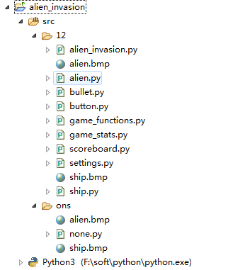
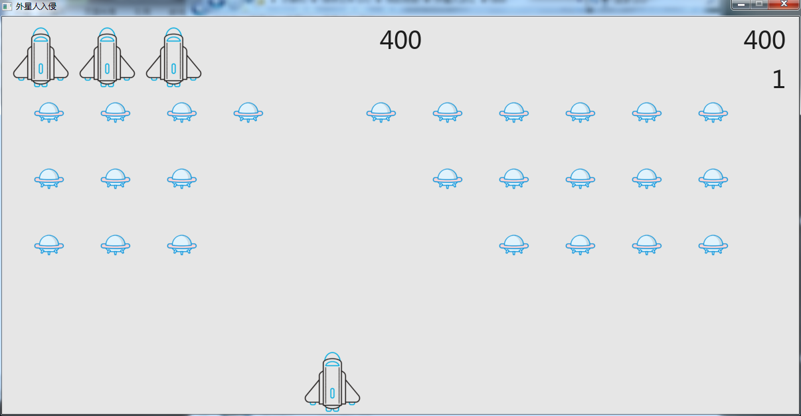

pythom做的飞船大战
大家好，我是mythSun。
很高兴能在这里和大家分享，python做的飞船大战游戏。
话不多说，直接开始。

这个项目中“12”是“one”的分文件。
就是相当于把“none”拆成了各小模块，因为当初要将其转为exe在电脑上直接玩，不然每次要玩都要打开eclipse多费劲。
有需要的小伙伴可以联系我要源码，在这个博客上写教程，
有些难为我了，毕竟就算简略的说，上面一个小模块一篇博文，都要写很久。
所以只能贴一下部分核心的代码，思路，
想挑战一下的小伙伴可以根据这个，做一个比我这个更好的。
思路：这个游戏其实就是接受键盘传入的按键，然后做出相应的处理，然后将新的界面，绘制到屏幕上。
用到的基本模型
敌方飞船模型：
子弹模型：
飞船模型
几个重要的方法
飞船被撞—游戏结束：
接受输入—按钮鼠标之类
图像更新—绘制屏幕
击中敌方飞船
显示得分—没有得分那太无聊了
另外还有一些，比如随着得分增高，敌方飞船移动就要加快，增加游戏难度；
再比如生命值限制、子弹限制等，就不一一说了。
有需要的小伙伴可以找我要源码。
效果图：
